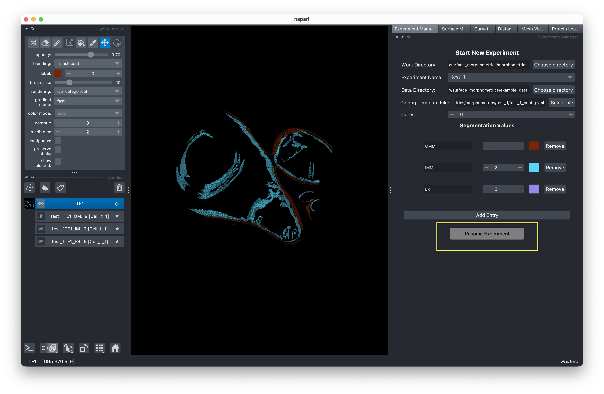
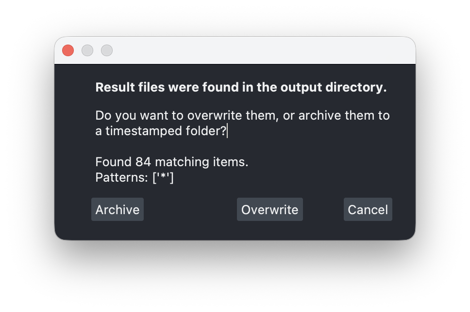

Resuming Experiments¶
You can resume a previously created experiment to continue analysis or rerun steps with different parameters.

How to resume¶
- Set the Work Directory to the parent folder containing your experiment.
- Select an existing Experiment Name — one whose folder contains a
*_config.ymlorconfig.ymlfile. - The button switches to Resume Experiment. Click it to load the experiment.
What gets loaded¶
When you resume, the GUI loads the experiment's config file and restores:
- Data directory and work directory paths
- Config template reference (or uses the experiment config if not set)
- Cores setting
- Segmentation values
- Script location
Each analysis tab also updates its state:
| Tab | On Resume |
|---|---|
| Mesh Generation | Reads mesh settings from config. Checks for existing .ply, .surface.vtp, or .xyz files to determine completion status. |
| PyCurv | Resets to ready state. Repopulates the VTP file list by scanning the experiment directory. |
| Distance & Orientation | Resets to ready state. Loads distance and orientation measurement settings from config. |
Rerunning jobs¶
When you run a job on an experiment that already has results, you're prompted to choose:
- Overwrite — Deletes old result files and runs fresh.
- Archive — Moves old files to a timestamped folder (e.g.,
results/archive_20241208_120000/) with a config snapshot, then runs fresh. - Cancel — Aborts the run.

This prevents accidental data loss when iterating on parameters.